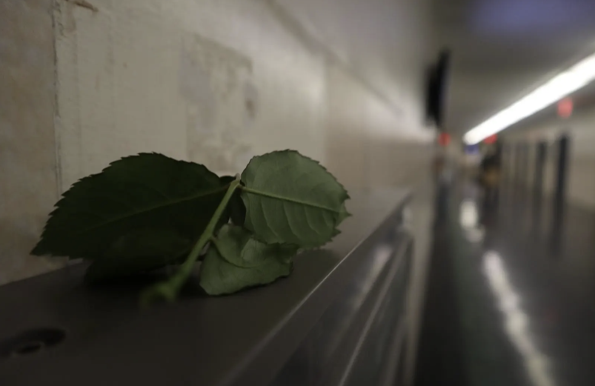
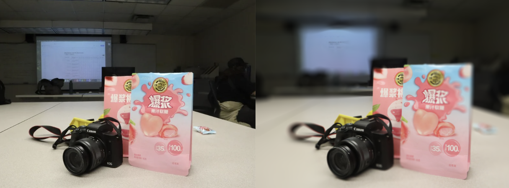
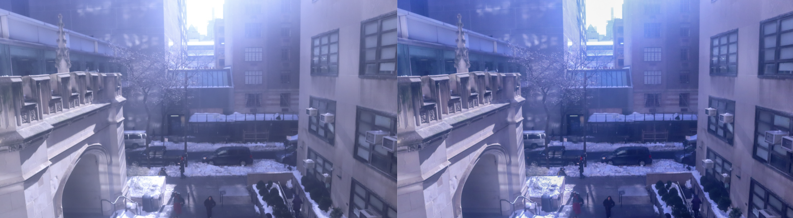

This is an image taken with the shallow depth of field technique where theere is a focus image, and a blurred background.

This is an image taken with the deep depth of field technique where the entire scene is in focus.

These images were taken with a canon camera and were editied in photoshop using the camera raw editing tools.